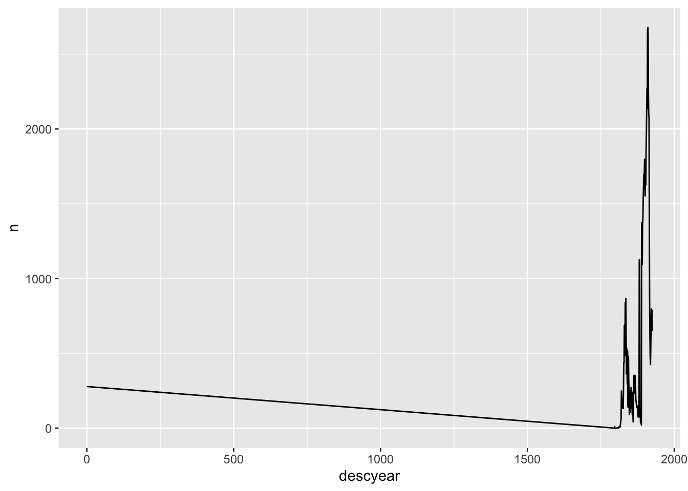
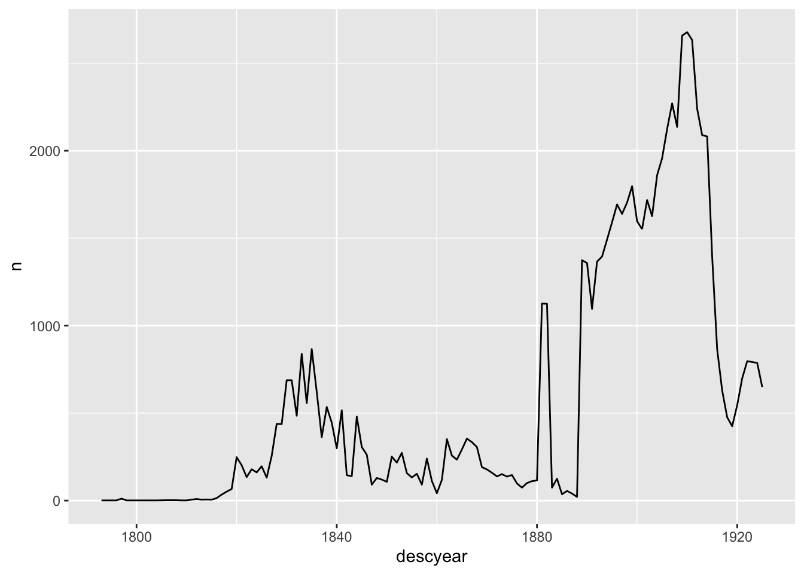
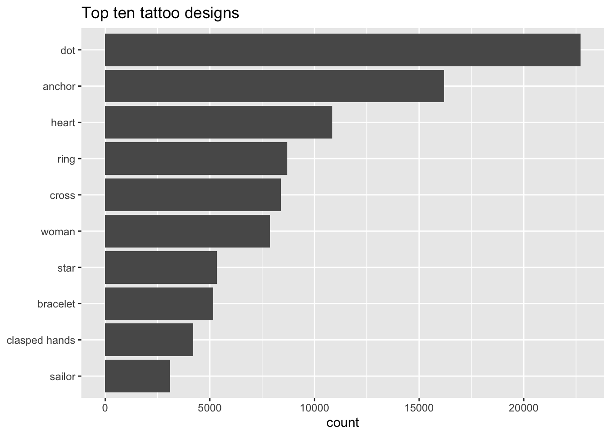
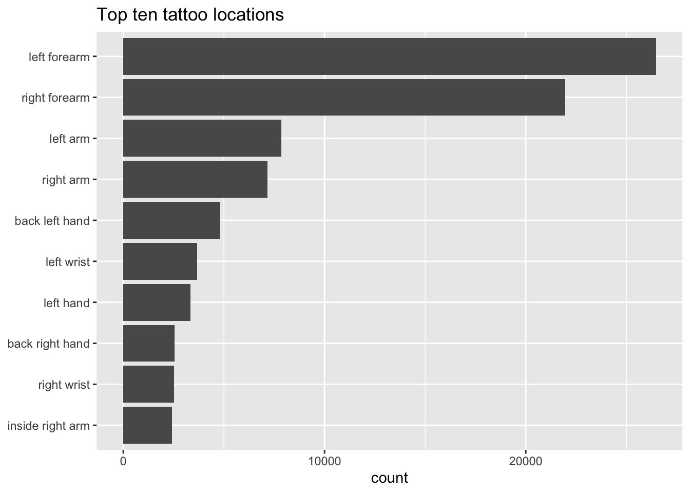
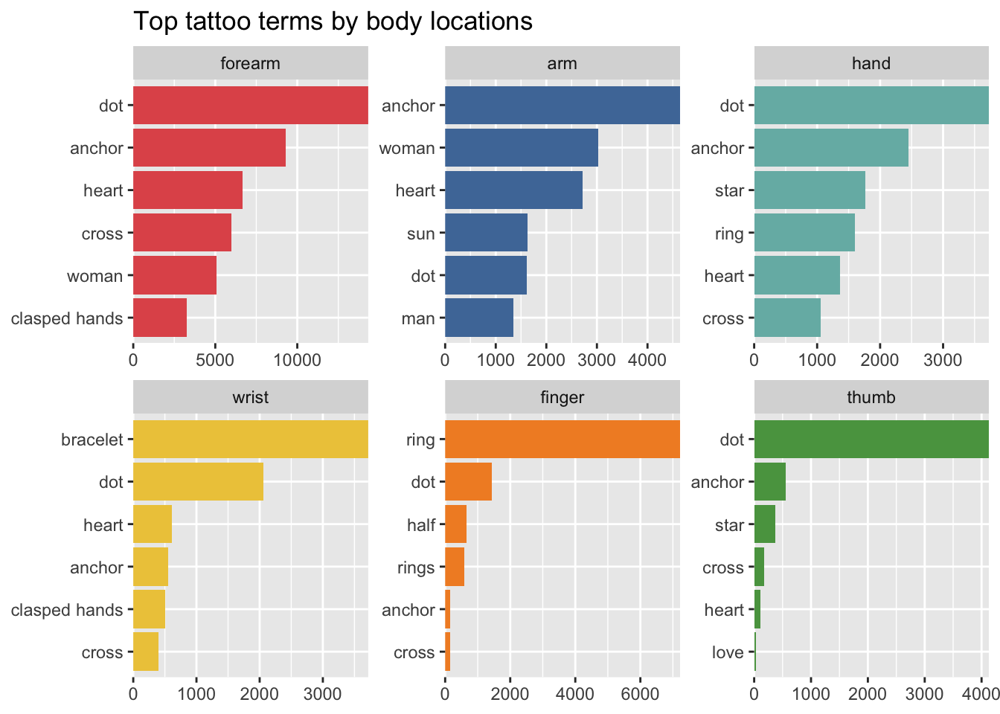

library(tidyverse)
descriptions_data <-
read_csv(here::here("_data", "convict_descriptions.2020-12-17.csv"), guess_max = 100000)Tidying Tattoos: Handling missing data and non-tidy columns
What is “tidy data”?
“Tidy” data describes data that conforms to three rules:
- Each variable must have its own column.
- Each observation must have its own row.
- Each value must have its own cell.
Data usually needs to be in a tidy format to work with R Tidyverse tools. But it isn’t necessarily the best format for data entry or storage, and very few real world datasets are tidy. So it’s almost always necessary to do some tidying as well as cleaning up more general messiness before being able to analyse data, and the Criminal Tattoos data is no exception. This post introduces just a couple of very common issues:
- cleaning: missing data, which can be encoded in varying ways
- tidying: multiple values in a single cell
I think this is also a good introduction to the fluidity of working with data in software like R. The same data can be easily reshaped in many ways, depending on the task in hand, and be manipulated several times in the course of the same analysis.
The data
Load the Tidyverse packages and the descriptions data file. (For more on both of these, see this introductory post.)
I don’t want all the stuff in the file, so I’ll slim it down a bit, to keep only descriptions that contain tattoos and the columns that I’ll be working with here.
tattoo_descriptions <-
descriptions_data %>%
filter(hastattoo=="y") %>%
select(subrecordid, descyear, born, gender, designs, digest)Missing data
Summarising a variable often immediately highlights problems. In this case, missing description years (as well as birth years) are encoded as 0.
tattoo_descriptions %>%
count(descyear)# A tibble: 125 × 2
descyear n
<dbl> <int>
1 0 279
2 1793 1
3 1796 1
4 1797 11
5 1798 1
6 1801 1
7 1804 1
8 1806 2
9 1808 2
10 1809 1
# … with 115 more rowsR doesn’t know that 0 means “missing”; it just treats it as a number.
tattoo_descriptions %>%
count(descyear) %>%
ggplot(aes(x=descyear, y=n)) +
geom_line()
I could just filter out 0s in a plot like this, but it’s better to convert them to “NA” from the start so R will handle them properly. There are several ways to do this.
a simple case
If you want to convert every 0 in your data to NA, na_if() is used to be an easy and convenient option. (A recent software update outlawed this use of na_if(). Apparently it was unintended and “accidental”.)
tattoo_descriptions %>%
select(descyear, born) %>%
filter(descyear==0) %>%
# convert 0s in both descyear and born to NA
mutate(descyear = na_if(descyear, 0), born=na_if(born, 0))# A tibble: 279 × 2
descyear born
<dbl> <dbl>
1 NA NA
2 NA NA
3 NA NA
4 NA NA
5 NA NA
6 NA NA
7 NA 1797
8 NA NA
9 NA NA
10 NA NA
# … with 269 more rows # na_if(0) # this is no longer permitted
# you could do this instead
# mutate(across(everything(), ~na_if(., 0)))more complex cases
A smarter option is replace_with_na() (from the {naniar} package). With this, you can specify which columns need attention, and list several possible values that might need conversion to NA (common variants might include -99 or “unknown”).
library(naniar)tattoo_descriptions %>%
select(descyear, born, gender) %>%
filter(descyear==0) %>%
# replace only 0s in descyear with NA
replace_with_na(replace=list(descyear=0))# A tibble: 279 × 3
descyear born gender
<dbl> <dbl> <chr>
1 NA 0 m
2 NA 0 m
3 NA 0 m
4 NA 0 m
5 NA 0 m
6 NA 0 m
7 NA 1797 m
8 NA 0 m
9 NA 0 m
10 NA 0 m
# … with 269 more rowsWhat about gender? For some reason there are both “u” for unknown and NA in the data. (Admittedly, there are only two of them so I’d be inclined to just drop them in this case…)
tattoo_descriptions %>%
count(gender)# A tibble: 4 × 2
gender n
<chr> <int>
1 f 3635
2 m 71811
3 u 1
4 <NA> 1I can fix several missing data issues in the same line of code.
tattoo_descriptions %>%
select(descyear, born, gender) %>%
filter(gender=="u" | is.na(gender)) %>%
# replace 0s in descyear and born and "u" in gender with NA
replace_with_na(replace=list(descyear=0, born=0, gender="u"))# A tibble: 2 × 3
descyear born gender
<dbl> <dbl> <chr>
1 1881 NA <NA>
2 1881 1837 <NA> After the 0s have been replaced with NAs, the line chart drops the missing years automatically (I can suppress the warning message, if that’s the behaviour I want, or investigate further if it isn’t).
tattoo_descriptions %>%
replace_with_na(replace=list(descyear=0)) %>%
count(descyear) %>%
ggplot(aes(x=descyear, y=n)) +
geom_line()
Multiple values in one cell
a simple case
The designs column contains all the tattoo designs identified in a description, separated with a “pipe” | symbol. This makes sense as a concise format for storing the data, but it’s not at all tidy or easy to work with.
tattoo_descriptions %>%
filter(!is.na(designs)) %>%
select(subrecordid, designs)# A tibble: 64,098 × 2
subrecordid designs
<chr> <chr>
1 cin77589 anchor|dog|moon|man and woman|diamond|half|sun|heart
2 cin77592 anchor
3 cin77603 man and woman|crucifix|mermaid
4 cin77604 dot
5 cin77609 dot|ring
6 cin77616 sun moon and stars
7 cin77619 woman|flower pot
8 cin77622 figure|woman|shamrock|thistle
9 cin77623 crown
10 cin77626 ship|anchor|crown|thistle|ring|rose|mermaid
# … with 64,088 more rowsAgain, I have more than one option for this.
One is a two-step process. First, str_split() splits up the string into pieces on each | symbol, putting them in a “list-column”.
tattoo_descriptions %>%
select(subrecordid, designs) %>%
filter(!is.na(designs)) %>%
mutate(design = str_split(designs, "\\|")) # A tibble: 64,098 × 3
subrecordid designs design
<chr> <chr> <list>
1 cin77589 anchor|dog|moon|man and woman|diamond|half|sun|heart <chr [8]>
2 cin77592 anchor <chr [1]>
3 cin77603 man and woman|crucifix|mermaid <chr [3]>
4 cin77604 dot <chr [1]>
5 cin77609 dot|ring <chr [2]>
6 cin77616 sun moon and stars <chr [1]>
7 cin77619 woman|flower pot <chr [2]>
8 cin77622 figure|woman|shamrock|thistle <chr [4]>
9 cin77623 crown <chr [1]>
10 cin77626 ship|anchor|crown|thistle|ring|rose|mermaid <chr [7]>
# … with 64,088 more rowsThen unnest() is used to unpack each element of the list onto its own line.
tattoo_descriptions_unnest <-
tattoo_descriptions %>%
filter(!is.na(designs)) %>%
mutate(design = str_split(designs, "\\|")) %>%
unnest(design)
tattoo_descriptions_unnest %>%
select(subrecordid, design) # A tibble: 176,777 × 2
subrecordid design
<chr> <chr>
1 cin77589 anchor
2 cin77589 dog
3 cin77589 moon
4 cin77589 man and woman
5 cin77589 diamond
6 cin77589 half
7 cin77589 sun
8 cin77589 heart
9 cin77592 anchor
10 cin77603 man and woman
# … with 176,767 more rowsBut in fact I find it easier to use unnest_tokens() ({tidytext} package) to do this kind of task. It has more options for more complex cases, can be done in a single step, and is quicker.
library(tidytext)
tattoo_descriptions_unnest_tokens <-
tattoo_descriptions %>%
filter(!is.na(designs)) %>%
unnest_tokens(design, designs, token="regex", pattern="\\|", to_lower = FALSE)
tattoo_descriptions_unnest_tokens %>%
select(subrecordid, design) # A tibble: 176,777 × 2
subrecordid design
<chr> <chr>
1 cin77589 anchor
2 cin77589 dog
3 cin77589 moon
4 cin77589 man and woman
5 cin77589 diamond
6 cin77589 half
7 cin77589 sun
8 cin77589 heart
9 cin77592 anchor
10 cin77603 man and woman
# … with 176,767 more rowsmore complex cases
The digest column is a considerably more complicated case. It contains what we called “body chunks” for each description - each body location identified as having at least one tattoo, followed by the list of tattoo terms. The format is [body part : list|of|terms], with chunks separated by a space.
tattoo_descriptions %>%
select(digest) # A tibble: 75,448 × 1
digest
<chr>
1 [right arm : man and woman|sun|dog|ST|1838] [left arm : half|moon|sun|ancho…
2 [right arm : CPEP] [right hand : JP]
3 [right arm : anchor|LARK] [ : EM]
4 [left arm : TH]
5 [right|shoulder : crucifix] [right arm : man and woman] [left arm : mermai…
6 [right hanging body specifier|hand : dot|dot]
7 [left hand : dot|ring]
8 [left arm : MB]
9 [left arm : sun moon and stars]
10 [left hand : flower pot] [right following body specifier : woman]
# … with 75,438 more rowsThree distinct steps are needed:
- put each chunk on its own line
- separate body part and tattoos
- put each tattoo on its own line
For the first step, I’ll use unnest_tokens again, followed by str_remove_all() to get rid of the square brackets.
(This needs a more advanced regex than the previous example; if you want to know more about how the regex works, try pasting the expression (?=\[[^\]]+\]) * into here.)
tattoo_chunks_unnest_tokens <-
tattoo_descriptions %>%
select(subrecordid, digest) %>%
unnest_tokens(chunk, digest, token="regex", pattern="(?=\\[[^\\]]+\\]) *", to_lower = FALSE) %>%
mutate(chunk = str_remove_all(chunk, "\\[|\\]"))
tattoo_chunks_unnest_tokens# A tibble: 143,609 × 2
subrecordid chunk
<chr> <chr>
1 cin77589 "right arm : man and woman|sun|dog|ST|1838 "
2 cin77589 "left arm : half|moon|sun|anchor|heart|diamond|IMB"
3 cin77590 "right arm : CPEP "
4 cin77590 "right hand : JP"
5 cin77592 "right arm : anchor|LARK "
6 cin77592 " : EM"
7 cin77598 "left arm : TH"
8 cin77603 "right|shoulder : crucifix "
9 cin77603 "right arm : man and woman "
10 cin77603 "left arm : mermaid"
# … with 143,599 more rowsStep two, splitting body part and tattoo terms into separate columns, uses the separate() function.
tattoo_chunks_unnest_tokens_separated <-
tattoo_chunks_unnest_tokens %>%
separate(chunk, into=c("body", "tattoos"), sep=" *: *")
tattoo_chunks_unnest_tokens_separated# A tibble: 143,609 × 3
subrecordid body tattoos
<chr> <chr> <chr>
1 cin77589 "right arm" "man and woman|sun|dog|ST|1838 "
2 cin77589 "left arm" "half|moon|sun|anchor|heart|diamond|IMB"
3 cin77590 "right arm" "CPEP "
4 cin77590 "right hand" "JP"
5 cin77592 "right arm" "anchor|LARK "
6 cin77592 "" "EM"
7 cin77598 "left arm" "TH"
8 cin77603 "right|shoulder" "crucifix "
9 cin77603 "right arm" "man and woman "
10 cin77603 "left arm" "mermaid"
# … with 143,599 more rowsFinally, to put each tattoo on its own line, I repeat the earlier step with unnest_tokens. The new output is a bit different from the first case because the digest includes everything identified as a tattoo, not just pictorial designs.
tattoo_chunks_tattoos_unnest_tokens <-
tattoo_chunks_unnest_tokens_separated %>%
unnest_tokens(tattoo, tattoos, token="regex", pattern="\\|", to_lower = FALSE)
tattoo_chunks_tattoos_unnest_tokens# A tibble: 343,417 × 3
subrecordid body tattoo
<chr> <chr> <chr>
1 cin77589 right arm "man and woman"
2 cin77589 right arm "sun"
3 cin77589 right arm "dog"
4 cin77589 right arm "ST"
5 cin77589 right arm "1838 "
6 cin77589 left arm "half"
7 cin77589 left arm "moon"
8 cin77589 left arm "sun"
9 cin77589 left arm "anchor"
10 cin77589 left arm "heart"
# … with 343,407 more rowsNow what?
Now I can have a lot more fun!
tattoo_descriptions_unnest_tokens %>%
count(design, sort=TRUE) %>%
head(10) %>%
ggplot(aes(x=fct_reorder(design, n), y=n)) +
geom_col() +
coord_flip() +
labs(y="count", x=NULL, title="Top ten tattoo designs")
Which are the most popular body locations for tattoos? This needs more cleaning, but you get the gist.
tattoo_chunks_unnest_tokens_separated %>%
mutate(body = str_replace_all(body, "\\|", " ")) %>%
count(body, sort = TRUE) %>%
head(10) %>%
ggplot(aes(x=fct_reorder(body, n), y=n)) +
geom_col() +
coord_flip() +
labs(y="count", x=NULL, title="Top ten tattoo locations")
And here’s one I cleaned up earlier…
